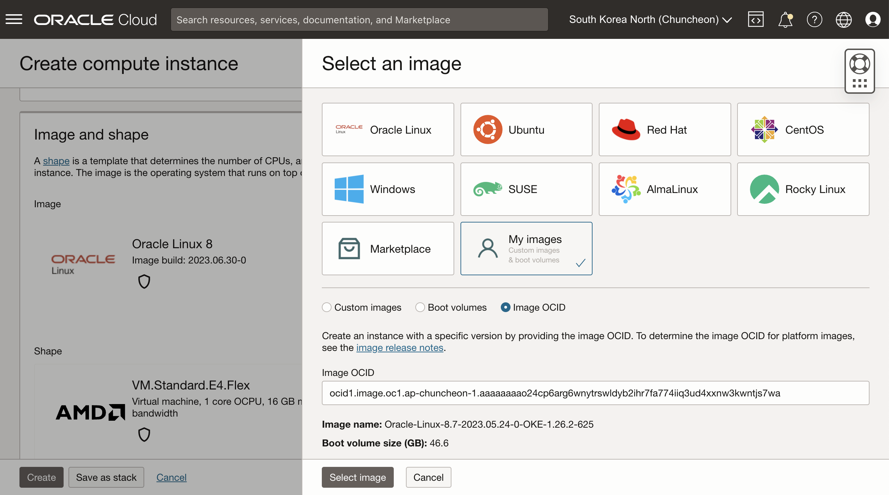
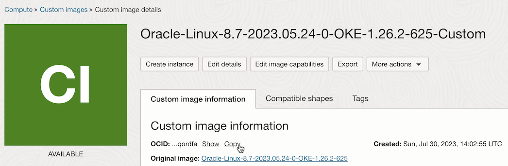
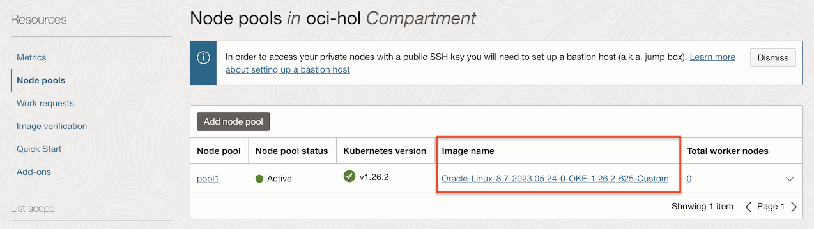

1.10.3 Worker Node 생성시 Custom Image 사용하기
OKE에서 Managed Node로 프로비저닝을 할때 지원하는 노드 이미지로 다음 세가지를 제공합니다. 세가지 모두 Oracle Linux입니다.
- Platform Images: 오라클에서 제공하는 이미지로 Oracle Linux를 포함하는 기본 이미지로, Managed Node로 프로비저닝시 OKE의 Worker Node로써 필요한 소프트웨어 설치 및 구성이 이루어집니다.
- OKE Images: 오라클에서 제공하는 이미지로 OKE Managed Node로 최적화된 이미지입니다. 필요한 소프트웨어 및 구성이 기본 포함되어 있어, 프로비저닝 시간이 단축됩니다. 대신 범용이미지가 아니라, 특정 쿠버네티스 버전, 특정 CPU 자원에 따라 사용해야 하는 이미지가 달라집니다.
- Custom Images: 사용자가 만든 이미지로, 위 오라클이 제공하는 Platform Images, OKE Images를 기반으로 만든 커스텀 이미지 이어야 합니다. Node Pool 생성시 사용할 이미지를 지정할 수 있는데, 현재 콘솔 UI에서는 Platform Images와 OKE Images만 나열되어, Custom Image 지정은 API 또는 CLI로만 지정이 가능합니다.
참고문서: OKE Documentation > Supported Images for Managed Nodes
앞선 예제에서 수행한 내용을 이용하여 Custom Node Image를 만들어 보겠습니다.
- Worker Node 디스크 사이즈 늘리기: 100GB
- kubelet 옵션 변경
- 최신 OS 업데이트
Custom Node Image 만들기
-
다음 명령을 통해서 베이스로 사용할 이미지를 확인합니다.
oci ce node-pool-options get --node-pool-option-id all-
실행 예시
- Platform Images: 예, Oracle-Linux-8.7-2023.05.24-0
- OKE Images: 예, Oracle-Linux-8.7-2023.05.24-0-OKE-1.26.2-625
thekoguryo@cloudshell:~ (ap-chuncheon-1)$ oci ce node-pool-options get --node-pool-option-id all { "data": { "images": [], "kubernetes-versions": [ "v1.24.1", "v1.25.4", "v1.26.2" ], "shapes": [ ... ], "sources": [ ... { "image-id": "ocid1.image.oc1.ap-chuncheon-1.aaaaaaaao24cp6arg6wnytrswldyb2ihr7fa774iiq3ud4xxnw3kwntjs7wa", "source-name": "Oracle-Linux-8.7-2023.05.24-0-OKE-1.26.2-625", "source-type": "IMAGE" }, { "image-id": "ocid1.image.oc1.ap-chuncheon-1.aaaaaaaatg5luufmd4dmdprkre335po2eo5fgyl56gun2pijgt2dyczon6ja", "source-name": "Oracle-Linux-8.7-2023.05.24-0-OKE-1.25.4-625", "source-type": "IMAGE" }, { "image-id": "ocid1.image.oc1.ap-chuncheon-1.aaaaaaaaxkw7zh4uqazu2g2aywrqrpc7uyye6pmki735d66mf5r4twcng7vq", "source-name": "Oracle-Linux-8.7-2023.05.24-0-OKE-1.24.1-625", "source-type": "IMAGE" }, ... { "image-id": "ocid1.image.oc1.ap-chuncheon-1.aaaaaaaaj3e35k76zk3ub6e2bapuwylcgqhnk6ej3bkmjc7uuahdniaymqma", "source-name": "Oracle-Linux-8.7-2023.05.24-0", "source-type": "IMAGE" }, ... ] } }
-
-
사용할 OKE 클러스터 버전에 맞는 이미지의 image-id를 확인합니다. 여기서는 1.26.버전용 OKE Image인 Oracle-Linux-8.7-2023.05.24-0-OKE-1.26.2-625을 사용하겠습니다.
-
클라우드 콘솔에서 Compute 인스턴스를 생성합니다.
-
OKE Image는 기본 목록에 없으므로, My images로 이동합니다. Image OCID를 선택 후, 앞서 사용할 OKE Image의 OCID를 입력합니다.

-
Boot volume size을 100GB로 늘립니다.
-
SSH Key 등을 다른 정보를 입력하여 인스턴스를 생성합니다.
-
-
생성한 인스턴스에 SSH로 접속합니다.
-
노드사이즈 증설을 위해 oci-growfs 명령으로 루트 파티션을 늘립니다.
sudo /usr/libexec/oci-growfs -y -
OKE Images로, 이미 쿠버네티스 설정 파일이 있는 것을 알 수 있습니다,
[opc@oke-custom-image ~]$ ls -la /etc/kubernetes/kubelet-config.json -rw-r--r--. 1 root root 1203 Jun 12 16:55 kubelet-config.json -
root 유저로
/etc/kubernetes/kubelet-config.json파일로 kubelet config를 변경합니다.- 수정전
{ ... "serializeImagePulls": false, ... }- 수정후
{ ... "serializeImagePulls": false, "cpuManagerPolicy": "static", "kubeReserved": { "cpu": "500m" }, ... }- config 파일이 아닌 kubelet-extra-args 옵션은 cloud-init을 통해 적용합니다.
-
추가 소프트웨어 설치를 가정하여, OS를 업데이트 합니다.
sudo dnf update -y -
모든 설정이 끝이나면, Custom Image를 생성하기 전에 반드시 먼저 OS 레벨에서 종료합니다.
[opc@oke-custom-image ~]$ sudo su [root@oke-custom-image opc]# shutdown now Connection to xxx.xx.xx.xx closed by remote host. Connection to xxx.xx.xx.xx closed. -
클라우드 콘솔에서 인스턴스를 Stop 합니다.
-
인스턴스가 중지되면 More Action > Create custom image를 클릭합니다.
-
원하는 이름을 입력후 Custom Image를 생성합니다.
- Name: 예) Oracle-Linux-8.7-2023.05.24-0-OKE-1.26.2-625-Custom
-
이미지 생성이 완료되면, 생성된 Custom Image의 OCID를 복사해 둡니다.

Node Pool의 Image ID 변경하기
동일한 Worker Node 유형을을 가지는 것이 Node Pool입니다. Node Pool 단위로 사용할 Node Image을 지정할 수 있습니다. 현재 클라우드 콘솔에서는 Platform Images와 OKE Images만 선택 목록에 나오기 때문에, Custom Image를 사용하는 경우 CLI, API를 사용해야 합니다.
공식 문서에 나온 것 처럼 Node Pool 생성시 image id 옵션으로 지정할 수 있습니다.
oci ce node-pool create \
--cluster-id ocid1.cluster.oc1.iad.aaaaaaaaaf______jrd \
--name my-custom-linux-image \
--node-image-id ocid1.image.oc1.iad.aaaaaaaa6______nha \
--compartment-id ocid1.compartment.oc1..aaaaaaaay______t6q \
--kubernetes-version v1.15.7 \
--node-shape VM.Standard2.1 \
--placement-configs "[{\"availability-domain\":\"IqDk:US-ASHBURN-AD-2\", \"capacityReservationId\":\"ocid1.capacityreservation.oc1.iad.anuwcljt2ah______yeq\", \"subnet-id\":\"ocid1.subnet.oc1.iad.aaaaaaaa2xpk______zva\", \"faultDomains\":[\"FAULT-DOMAIN-3\", \"FAULT-DOMAIN-1\"]}, {\"availability-domain\":\"IqDk:US-ASHBURN-AD-1\", \"subnet-id\":\"ocid1.subnet.oc1.iad.aaaaaaaauhls______bpq\", \"faultDomains\": [\"FAULT-DOMAIN-1\", \"FAULT-DOMAIN-2\"]}]" \
--size 1 \
--region=us-ashburn-1
Node Pool 생성시는 많은 옵션 설정이 필요하므로, 편의상 더 간편하게, 이미 생성된 Node Pool에 대한 image id만 업데이트 하겠습니다.
-
업데이트할 Node Pool의 OCID를 확인합니다.
-
사용할 Custom Image의 OCID를 확인합니다.
-
Node Pool의 image id를 업데이트 하겠습니다. OCI CLI 명령 형식은 다음과 같습니다.
oci ce node-pool update --node-pool-id $NODE_POOL_OCID --node-source-details "{ 'source_type': 'IMAGE', 'image_id': '$CUSTOM_IMAGE_ID'}"- Cloud Shell에서 실행한 예시
thekoguryo@cloudshell:~ (ap-chuncheon-1)$ oci ce node-pool update --node-pool-id ocid1.nodepool.oc1.ap-chuncheon-1.aaaaaaaa3_____2ca --node-source-details "{ 'source_type': 'IMAGE', 'image_id': 'ocid1.image.oc1.ap-chuncheon-1.aaaaaaaan5_____dfa'}" WARNING: Updates to initial-node-labels and subnet-ids and node-config-details and node-metadata and node-source-details and node-shape-config and freeform-tags and defined-tags and node-eviction-node-pool-settings and node-pool-cycling-details will replace any existing values. Are you sure you want to continue? [y/N]: y { "opc-work-request-id": "ocid1.clustersworkrequest.oc1.ap-chuncheon-1.aaaaaaaah_____eba" } -
업데이트가 끝나고, 클라우드 콘솔에서 결과를 확인합니다.

-
Node Pool에 기존 노드가 있는 경우, 노드를 재생성해야 합니다. 여기서는 현재 0개 이므로, 테스트를 위해 1개로 Node 수를 수정합니다.
-
노드가 생성되면 Ready 상태인 것을 확인합니다.
thekoguryo@cloudshell:~ (ap-chuncheon-1)$ kubectl get nodes NAME STATUS ROLES AGE VERSION 10.0.10.57 Ready node 6m22s v1.26.2 -
kubelet 옵션을 확인합니다.
$ kubectl get --raw "/api/v1/nodes/10.0.10.57/proxy/configz" | jq { "kubeletconfig": { ... "cpuManagerPolicy": "static", ... "serializeImagePulls": false, ... "kubeReserved": { "cpu": "500m" }, ... } } -
생성된 Worker Node를 SSH로 접속합니다.
-
디스크 사이즈를 확인합니다. Custom Image 작성시 늘린 사이즈 인 것을 알 수 있습니다.
[opc@oke-caefqtyrfoa-n7fcc7cocrq-sgx6e4vktka-0 ~]$ df -h Filesystem Size Used Avail Use% Mounted on ... /dev/mapper/ocivolume-root 89G 14G 76G 16% / /dev/mapper/ocivolume-oled 10G 119M 9.9G 2% /var/oled ... -
OS 업데이트 상태를 확인합니다.
[opc@oke-caefqtyrfoa-n7fcc7cocrq-sgx6e4vktka-0 ~]$ sudo dnf update -y Last metadata expiration check: 11:48:43 ago on Sun 30 Jul 2023 01:43:32 PM UTC. Dependencies resolved. Nothing to do. Complete! -
작성된 Custom Image의 설정이 잘 적용되었으며, OKE 클러스터에서 Ready 상태로 잘 동작함을 알 수 있습니다.
이 글은 개인으로서, 개인의 시간을 할애하여 작성된 글입니다. 글의 내용에 오류가 있을 수 있으며, 글 속의 의견은 개인적인 의견입니다.